Materials Tutorial
Overview
The Material Editor is very powerful tool in the Unreal Editor suite that allows you to create a multitude of effects. Here you will see how to import textures and create a few basic material effects.
If this is your first time creating a Material in the Unreal Editor, be sure that you read up on Importing Textures, and The Material Editor. Also look at Material Examples for a quick-reference for implementing different types of materials in UnrealEd.
Note that if you're interested in creating materials for mobile platforms, you should check out the mobile materials reference page for information about that.
Getting Content into the Engine
Importing Textures
Before we create a Material we will import our textures. You can click import in the bottom left of the Content Browser then navigate to your textures and import them all at once.
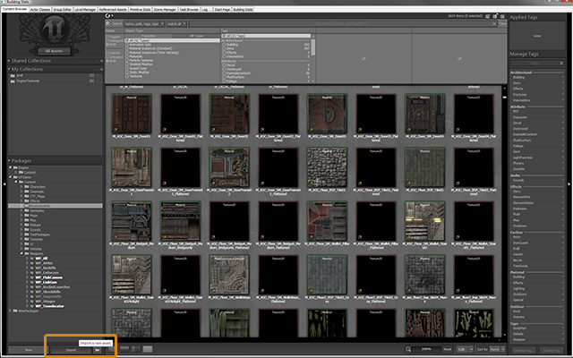
Once you have selected all the files for import the import dialog will appear. You must give the asset a package name (new or existing) and a Group name.
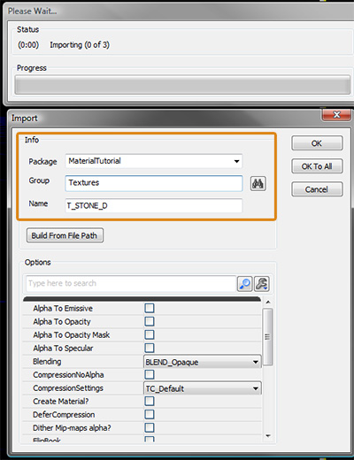
For some texture types such as normal maps you will need to change the compression settings. For example a normal map would be set to TC_Normalmap instead of TC_Default which is used for diffuse, specular and mask maps.
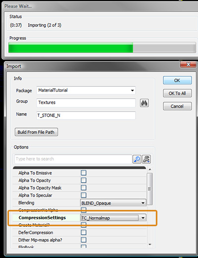
CompressionSettings
- TC_Default
- This profile should be used for regular textures like diffuse or specular masks.
- TC_NormalMap
- If you are importing a Normal map this is the profile you want. It will use the same compression as the Default profile but it will also correctly set the pack/unpack range automatically.
- TC_DisplacementMap
- If you are planning on using the texture as a terrain displacement map, then you will want to select this profile. Note that the engine will crunch the texture down to an 8-bit grayscale image using the Alpha Channel as the source (not the RGB channels).
CompressionNoAlpha
For optimal compression, set this to True if your Texture has no Alpha channel (or if you wish to discard the Alpha channel). If your texture does have an Alpha channel, be sure to set this option to False
NOTE: When importing a texture, the original source file also gets imported. This allows you to change your mind and increase or decrease the amount of compression at any point.
If you need to change the settings of a texture after it has been imported you can right click on the texture inside of the content browser and select Edit Using Texture Viewer. This window contains options for changing the compression and LODGroup settings.
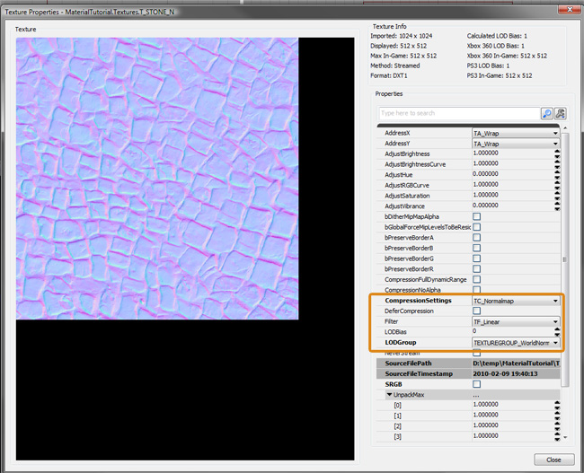
Creating a New Material
Once you have your textures in the content browser you can create your material. Right click in the black space in the center of the content browser and select New Material.
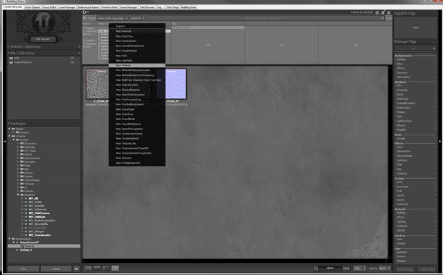
The Material Editor
In the material editor you can hold "T" and click in the black space to place a Texture Sample node using the texture currently selected in the content browser. You should add the Diffuse Texture and the Normal Texture and connect them to the Diffuse and Normal inputs. This will give you a basic surface that has bumpy details that react to light.
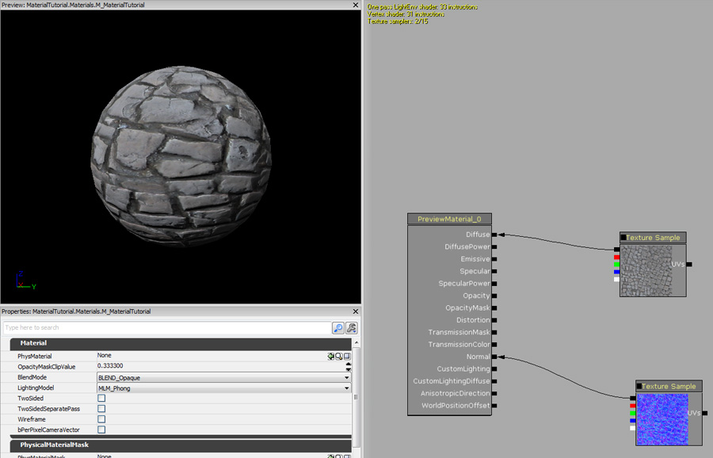
You can also add a basic mask/heightmap texture to get a bump offset/parallax effect. Right click and select Utility, BumpOffset then connect the red channel of your mask texture to the height input of the bump offset then connect it's output to the Diffuse and Normalmap texture coordinat's inputs.
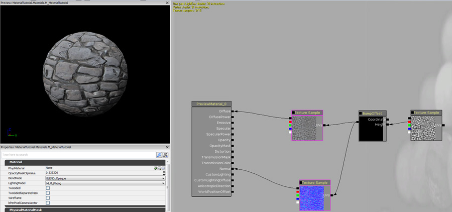
To get a basic specular response on the material you can connect the diffuse texture to the Specular Input.
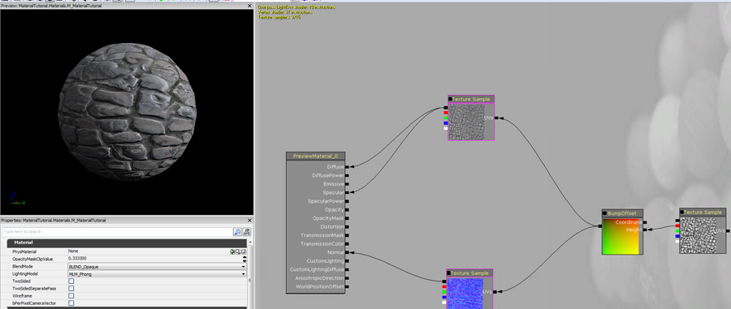
To achieve a more elaborate specular response you can create a scalar constant by holding the "1" key and clicking in the blank area. Give this a value of 5 and connect it to the Specular Power input. You can also shift the specular color by right clicking and selecting Parameter, Vector Parameter, give this node a name of SpecularColor and enter a color. Hold M and click twice to create 2 multiply nodes. Connect the output of the mask to the first multiply node's B input and the SpecularColor parameter to the multiply node's A input. Connect the output of this into the second multiply node's B input and the Output of the diffuse texture into the A input. Connect the output of the second multiply to the Specular input.
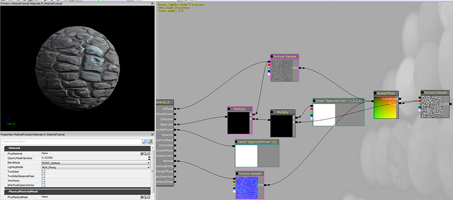
A good way to add contrast to the mask texture is to create a lerp node by right clicking in the blank area and selecting Math->LinearInterpolate. Connect the red channel of the mask texture to the Alpha input of the Lerp node. Create 2 scalar constant nodes by holding the "1" key and clicking twice. Give one of them a value above 1 and the other a value of 0 or slightly below 0. Create a constant clamp node by right clicking and selecting Utility, ConstantClamp. Connect the output of the lerp node to the input of the constant clamp. Replace the input where the mask was used in the multiply with this one.
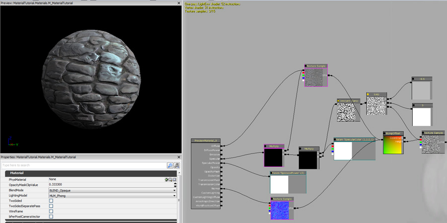
You can repurpose masks in materials, for example you can use this to create an emissive glow. Create a One minus node by holding the "O" key and clicking, then create a vector parameter and a multiply. Connect the nodes like the image below and connect the output of the multiply to the Material's Emissive input.
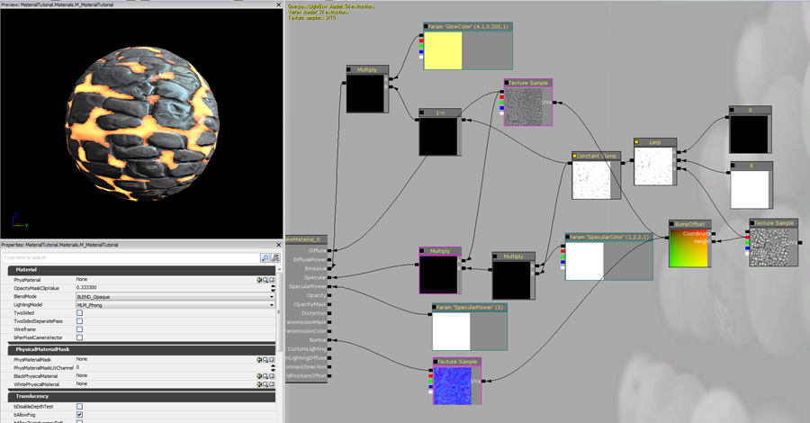
Below is an example of the same mask used as opacity.
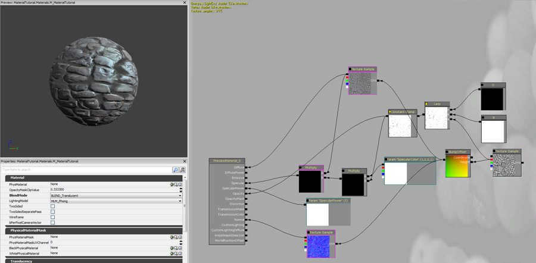
Material Examples
For a more comprehensive breakdown of different types of materials that can be created, see the Materials Reference.
Important!
You are viewing documentation for the Unreal Development Kit (UDK).
If you are looking for the Unreal Engine 4 documentation, please visit the Unreal Engine 4 Documentation site.